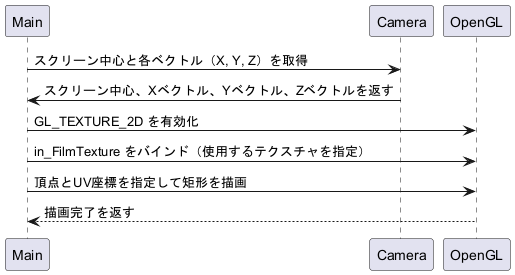

◆ drawFilm()
フィルムバッファをスクリーンに描画する関数 この関数は、カメラの視点を基準にフィルムバッファを四角形（矩形）として3D空間に配置し、 OpenGL を用いてスクリーンに描画します。フィルムバッファの内容はテクスチャとして貼り付けられます。 フィルムバッファとは、最終的に画面に表示される画像のピクセルごとの色（RGBなど）を一時的に格納しておくメモリ領域を指します。簡単に言えば、「完成した画像の画素データの置き場所」です。
処理の流れ: 1. スクリーンの頂点を計算カメラのスクリーン位置を基準に、四角形の4つの頂点を計算します。 Eigen::Vector3d screen_center = in_Camera.getEyePoint() - in_Camera.getZVector() * in_Camera.getFocalLength();
Eigen::Vector3d p1 = screen_center - in_Camera.getXVector() * in_Camera.getScreenWidth() * 0.5 - in_Camera.getYVector() * in_Camera.getScreenHeight() * 0.5;
Eigen::Vector3d p2 = screen_center + in_Camera.getXVector() * in_Camera.getScreenWidth() * 0.5 - in_Camera.getYVector() * in_Camera.getScreenHeight() * 0.5;
Eigen::Vector3d p3 = screen_center + in_Camera.getXVector() * in_Camera.getScreenWidth() * 0.5 + in_Camera.getYVector() * in_Camera.getScreenHeight() * 0.5;
Eigen::Vector3d p4 = screen_center - in_Camera.getXVector() * in_Camera.getScreenWidth() * 0.5 + in_Camera.getYVector() * in_Camera.getScreenHeight() * 0.5;
2. OpenGL のテクスチャモードを有効化描画対象となるテクスチャを OpenGL にバインドします。 glEnable(GL_TEXTURE_2D);
glBindTexture(GL_TEXTURE_2D, in_FilmTexture);
3. テクスチャを貼り付けた四角形を描画テクスチャの UV 座標と対応する頂点座標を指定し、三角形を2つ描画して四角形を形成します。 glBegin(GL_TRIANGLES);
glTexCoord2f(0.0, 1.0);
glVertex3f(p1.x(), p1.y(), p1.z());
glTexCoord2f(1.0, 1.0);
glVertex3f(p2.x(), p2.y(), p2.z());
glTexCoord2f(1.0, 0.0);
glVertex3f(p3.x(), p3.y(), p3.z());
glTexCoord2f(0.0, 1.0);
glVertex3f(p1.x(), p1.y(), p1.z());
glTexCoord2f(1.0, 0.0);
glVertex3f(p3.x(), p3.y(), p3.z());
glTexCoord2f(0.0, 0.0);
glVertex3f(p4.x(), p4.y(), p4.z());
glEnd();
4. OpenGL のテクスチャモードを無効化テクスチャ描画が終了した後、テクスチャモードを無効化します。 glDisable(GL_TEXTURE_2D);
シーケンス図
|
構築: